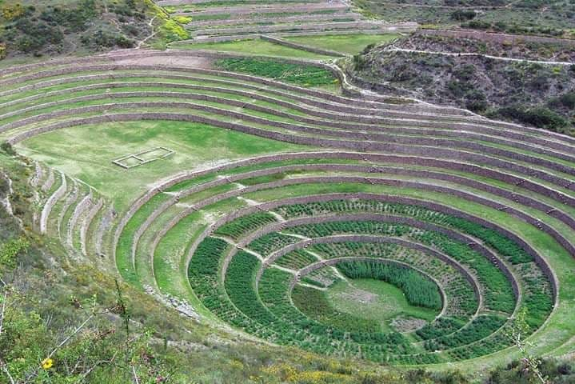

Classic Machu Picchu - 5 Days
Classic Machu Picchu Tour - 5 Days

Machu Picchu is considered an architectural and engineering masterpiece. It's peculiar architectural and landscape characteristics make it one of the most popular tourist destinations on the planet.
Machu Picchu is a UNESCO World Heritage Site since 1983, as part of the Historical Sanctuary of Machu Picchu. On July 7, 2007, Machu Picchu was declared one of the seven modern wonders of the world.
DAY 1: CUSCO IN - CITY TOUR: QORICANCHA TEMPLE
After arriving in Cusco, you will be picked up from your hotel (typically around 14:00) for the City Tour. During this tour we will visit Qoricancha (the Sun Temple) and Santo Domingo Cathedral. Then, we will visit numerous archaelogical sites: Sacsayhuaman, Q’enqo, Pukapukara and Tambomachay. Finally, you will experience typical Peruvian dance in a special folk show before returning to your hotel in Cusco for the night.
DAY 2: SACRED VALLEY OF THE INCAS TO AGUAS CALIENTES
After breakfast, we leave the hotel (8:30 am) toward the ruins of Ollantaytambo via a the town of Pisaq (located 50 minutes from Cusco). During a brief stop over, we will visit the local craft market and main plaza.
From there, the journey continues along the banks of the Vilcanota River until reaching Urubamba, where we stop for an exquisite buffet lunch. Then, we visit Ollantaytambo, one of the last living Incan towns in the world and full of archaeological significance. Finally, we take the train to Aguas Calientes, where we will stay for the night.
DAY 3: MACHU PICCHU
After an early breakfast, a bus will take you from your hotel to the entrance of Machu Picchu in time to view the sunrise over the ruins (approx. 6:00 am). Once inside, you will have a 2.5 hour guided tour of the ins and outs of this majestic citadel, visiting the Three Windows and Solar Clock, among other sites. After plenty of time to explore on your own, a bus will take you back down to Aguas Calientes to catch the return train to Ollantaytambo and bus back to Cusco.
DAY 4: THE SALT MINES OF MORAY
An 8:30 am hotel pickup will take you to Maras, a small salt town used since the times of the Incans for mining and trade. About 7 kms southwest of Maras is Moray, a unique collection of gigantic terraces and agricultural platforms used for mining. We return via bus to your hotel in Cusco for the night.
DAY 5: AIRPORT TRANSFER AND Farewell
Depending on your flight itinerary, we will get you back to the airport in plenty of time to return home.
INCLUDED
Transportation: airport → hotel → train station
3 nights of accomodations (including breakfast)
Entrance tickets to Machu Picchu
Professional bilingual guide (Spanish or English)
Train tickets to Machu Picchu
Rountrip train station transfers
NOT INCLUDED
Airfare
Food (lunch and dinner)
Tip
OTHER
DEPARTURES: Daily
NOTE: The entrance to Huayna Picchu must be confirmed at the time of making your reservation and is subject to availability (maximum 400 spots per day). Your reservation must be 3 months in advance.
Feel free to ask about other adventure services, hotels, or other tours outside of Cusco.
Please email us at magiccusco@gmail.com and we will respond as soon as possible with booking information and/or answering your questions.